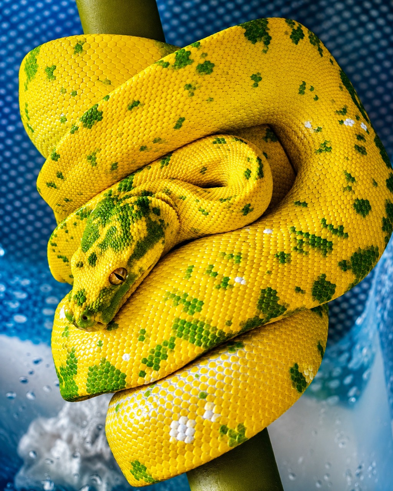
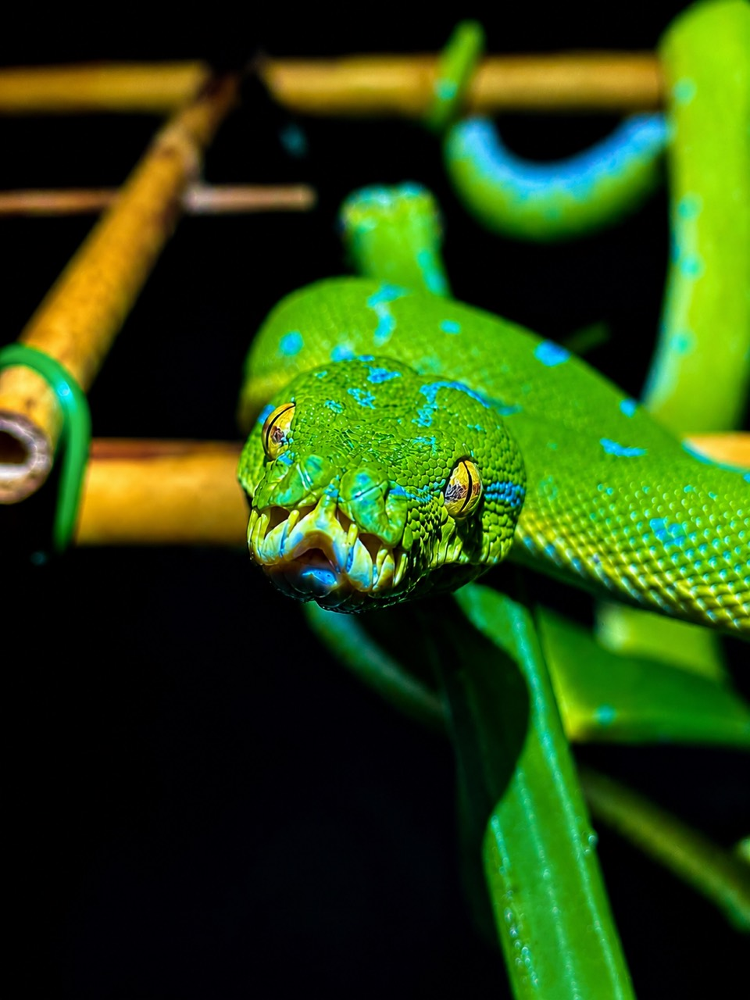
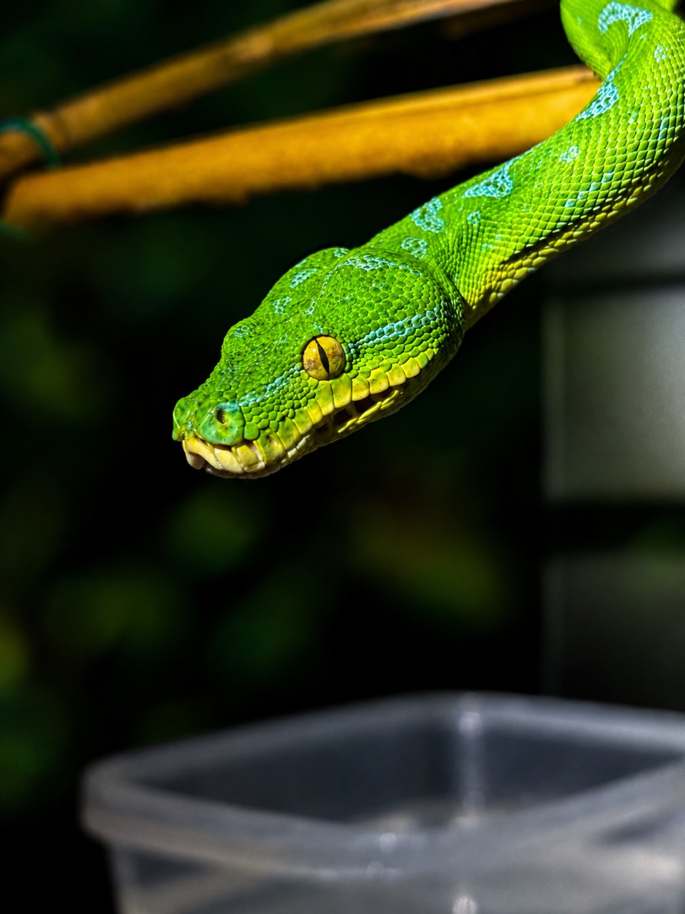
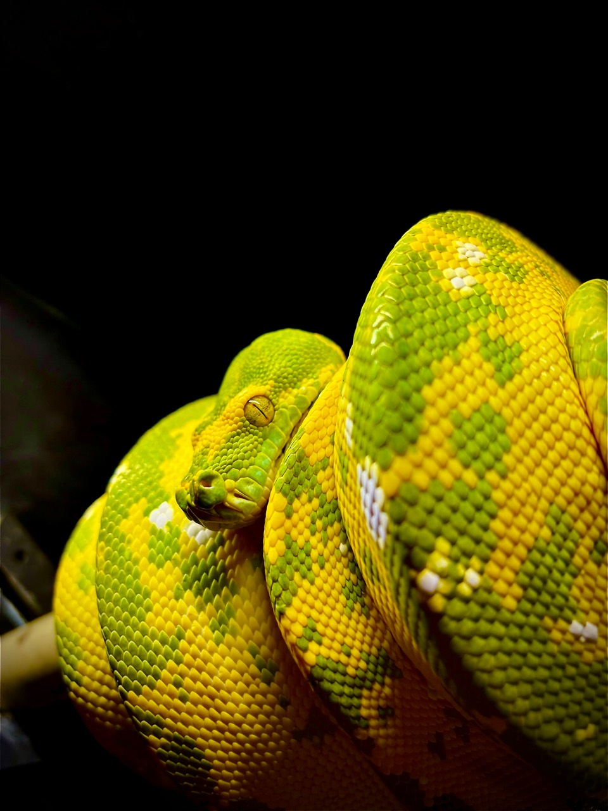

NAJWAŻNIEJSZY WNIOSEK
Lokalność to informacja geograficzna poparta historią pochodzenia. Nie jest nią sam kolor, wzór ani kształt głowy. Biak, Aru, Manokwari czy Sorong mogą opisywać prawdziwą linię lokalizacyjną, lokalizacyjny typ fenotypu albo jedynie dawny port wysyłki — i tych znaczeń nie wolno mieszać.
Wygląd może podpowiadać. Rodowód może dokumentować. Fotografia sama nie potwierdza lokalności.
Najobszerniejsza współczesna analiza kompleksu — genomy mitochondrialne, 389 egzonów jądrowych i morfologia — wspiera dwa gatunki rozdzielone głównie przez centralne pasma górskie Nowej Gwinei. W północnej linii autorzy rozpoznali trzy podgatunki. To daje cztery nazwane taksony, ale nie cztery gatunki.
M. viridis na południu oraz M. azurea na północy.
M. a. azurea, M. a. pulcher i M. a. utaraensis.
„Sorong” czy „Cyclops” są nazwami hodowlano-geograficznymi, nie osobnymi gatunkami.
JEDEN WĄŻ • TRZY JĘZYKI
Chondro, pyton zielony i Morelia
„Chondro” jest utrwalonym skrótem hodowlanym pochodzącym od dawnego rodzaju Chondropython. To wygodna, historyczna nazwa środowiskowa, ale nie aktualny rodzaj i nie trzeci gatunek. Pyton zielony jest nazwą zwyczajową. Morelia viridis i Morelia azurea to natomiast nazwy naukowe dwóch linii uznawanych obecnie w Reptile Database.
Potoczne określenie całej grupy w hodowli. Nie rozstrzyga taksonomii.
Opisowa nazwa używana dla obu współcześnie wyróżnianych gatunków.
Nazwy taksonów wynikające z diagnoz i hipotezy pokrewieństwa.
Stare książki i karty hodowlane mogą poprawnie opisywać zwierzęta pod szeroko rozumianą nazwą Morelia viridis. Nowa klasyfikacja porządkuje ich pokrewieństwo; nie unieważnia automatycznie obserwacji, ale wymaga sprawdzenia, której populacji naprawdę dotyczyły.
OD ARU DO GENOMIKI
150 lat zmieniających się nazw
- Python viridis
Hermann Schlegel opisuje gatunek na podstawie okazów z Wysp Aru. Aru pozostaje lokalizacją typową nazwy viridis.
- Chondropython azureus
Adolf Bernhard Meyer opisuje okaz z Korido na Biak i tworzy rodzaj Chondropython. Stąd późniejsze „chondro”.
- Chondropython pulcher
Henri Sauvage opisuje materiał z wyspy Mansinam, około 6 km od dzisiejszego Manokwari.
- Synonimizacja
George Boulenger łączy nazwy azureus i pulcher z szeroko rozumianym viridis.
- Morelia viridis
Analiza Klugego umieszcza pytona zielonego w rodzaju Morelia.
- Dwie głębokie linie
Rawlings i Donnellan wykazują północną i południową linię mtDNA, średnio różniącą się o 7,6%, lecz świadomie nie formalizują podziału bez szerszych danych.
- Dwa gatunki, trzy podgatunki północne
Natusch i współautorzy łączą dane mitochondrialne, setki markerów jądrowych oraz morfologię i proponują konserwatywny podział używany w tym artykule.
- Aktualne listy
Reptile Database rozpoznaje M. viridis i M. azurea; w obrębie drugiego gatunku wymienia trzy podgatunki.

OBECNA HIPOTEZA
Cztery taksony, nie cztery gatunki
UPROSZCZONY SCHEMAT BIOGEOGRAFICZNY • NIE JEST MAPĄ I NIE WYZNACZA GRANIC PUNKTOWYCH
| Takson | Rdzeń zasięgu | Cechy użyte w diagnozie | Granice pewności |
|---|---|---|---|
| Morelia viridis | Na południe od centralnych gór; Aru; Cape York. Lokalnie linia sięga na północ wschodniej PNG. | Tylko żółte młode; często zwarty biały pas kręgowy albo aruńskie „rozetki”; zwykle krótszy ogon. | Nie każdy dorosły ma wszystkie cechy. Wschodnie populacje PNG mogą odbiegać od ogólnego wzorca. |
| M. a. azurea | Grupa Biak: Biak, Supiori, Numfor i Padaido. | Czerwone lub żółte młode; późniejsza zmiana barwy; długi zwężający się ogon z ciemnym końcem; duża zmienność dorosłych. | Cecha barwy i temperamentu nie identyfikuje pewnie pojedynczego zwierzęcia. |
| M. a. pulcher | Vogelkop/Bird’s Head i Bomberai; wyspy zachodnie, w tym część Raja Ampat; na wschód co najmniej po Nabire. | Często limonkowa zieleń i jasnoniebieski wzór grzbietowy; długi ogon z ciemnym końcem. | Morfologicznie silnie nakłada się z utaraensis; zachodnie i wschodnie granice wymagają dalszego próbkowania. |
| M. a. utaraensis | Północny ląd i przyległe obszary od Yapen/Mios Num ku wschodniej PNG, w tym Huon i okolice Lae. | Szybsza zmiana barwy; tendencja do ciągłego jasnoniebieskiego wzoru; jasny koniec ogona; różnice w liczbie łusek. | Granice w zachodniej części północnej Nowej Gwinei i w wysokich dolinach nie są punktowo rozstrzygnięte. |
Diagnoza naukowa korzysta z zestawu cech, w tym skali, proporcji i danych genetycznych. Tabela nie jest kluczem do oznaczania zwierzęcia ze zdjęcia.
GEOGRAFIA PRZED KOLOREM
Najważniejsze lokalizacje — co możemy powiedzieć uczciwie
Aru
Lokalizacja typowa viridis, na południowy zachód od Nowej Gwinei. Dane terenowe i hodowlane wspierają wyłącznie żółte młode. U dorosłych często pojawiają się białe „rozetki” wzdłuż grzbietu, lecz ich brak nie wyklucza Aru.
Pułapka:biały wzór nie jest certyfikatem pochodzenia.
Biak
Izolowana populacja wyspiarska. Może rodzić czerwone i żółte młode; ontogenetyczna zmiana barwy bywa późna, a dorosły fenotyp wyjątkowo zmienny. W analizie morfologicznej często wyróżniał ją długi, ciemno zakończony ogon.
Pułapka:późna zmiana koloru i reaktywność są tendencjami, nie testem czystości.
Manokwari
Mansinam koło Manokwari jest lokalizacją typową nazwy pulcher. Materiał naukowy opisuje zwykle jednolitą limonkową zieleń i jasnoniebieski wzór, ale cechy silnie nakładają się na inne północne populacje.
Pułapka:„Manokwari type” to uczciwsze określenie, jeśli rodowód nie sięga udokumentowanych założycieli.
Sorong
Geograficznie prawdziwa populacja z rejonu Sorong mieści się w zachodniej części zasięgu pulcher. Jednocześnie Sorong jest ważnym ośrodkiem i historycznym węzłem handlowym.
Pułapka:miejsce wysyłki lub zakupu nie musi być miejscem odłowu przodków.
Kofiau, Misool, Salawati, Waigeo
Wyspy zachodnie należą w proponowanym układzie do pulcher. W szerokim badaniu czerwonych młodych nie stwierdzono w próbach z Raja Ampat, mimo że występują one na pobliskim Vogelkopie.
Pułapka:„Raja Ampat” obejmuje różne wyspy i nie powinno zastępować konkretnej lokalizacji.
Jayapura / Cyclops
Hodowlane etykiety z okolic Jayapury i Gór Cyclops mieszczą się w północnej linii kontynentalnej. Czerwone i żółte młode są możliwe, a jasnoniebieski wzór dorosłych jest tendencją populacyjną.
Pułapka:miasto, pasmo górskie i linia hodowlana to trzy różne poziomy dokładności.
Yapen
Choć leży blisko Biak, Yapen nie został włączony do podgatunku azurea. W analizie systematycznej należy do północnej kontynentalnej linii utaraensis.
Pułapka:bliskość wysp nie oznacza automatycznie tej samej historii ewolucyjnej.
Merauke
Południowa lokalizacja należąca do M. viridis. Dane genetyczne łączą południową Nową Gwineę, Aru i australijskie Cape York w jedną południową linię.
Pułapka:duży rozmiar pojedynczego węża nie potwierdza etykiety Merauke.
Wamena / „highland”
Centralne góry są główną barierą między liniami, ale nie prostą kreską. Badania wykazały wyjątki oraz populacje w wysokich dolinach po obu stronach działu.
Wniosek:bez dokładnego miejsca i rodowodu szeroka etykieta wysokogórska nie wystarcza do przypisania taksonu.


FENOTYP TO NIE PASZPORT
Czy można rozpoznać lokalność po wyglądzie?
Najkrótsza odpowiedź brzmi: nie z wiarygodnością potrzebną do potwierdzenia pochodzenia. Zespół Natuscha wskazał, że dla niewprawnego obserwatora najbardziej użyteczna ogólna różnica jest tylko jedna: czerwone młode występują w M. azurea i nie zostały potwierdzone w M. viridis. Żółte młode występują jednak w obu gatunkach, więc kolor żółty niczego sam nie rozstrzyga.
Nawet pełna analiza morfologiczna korzystała z wielu cech naraz: liczby łusek, proporcji ogona, wzoru tęczówki, tempa zmiany barwy i układu wzoru grzbietowego. Autorzy sami podkreślali nakładanie się cech, szczególnie między pulcher i utaraensis.
Barwa młodego, ogon, wzór grzbietu, tęczówka i skala — rozpatrywane razem.
Selekcja hodowlana, mieszańce lokalności i naturalna zmienność mogą naśladować „typ”.
Dane rodziców, hodowców i założycieli linii są ważniejsze niż marketingowy opis.
GŁOS PRAKTYKÓW
Doświadczeni hodowcy mówią tu tym samym językiem co nauka
Greg Maxwell od lat zwracał uwagę na mit oznaczania lokalności po wyglądzie. GS Reptiles poświęcił temu osobny materiał, a archiwalna galeria Kingsnake ostrzega, że część nazw pochodzi od portów wysyłki i starych stad o niejasnym pochodzeniu. Praktyczna zasada jest spójna: przy braku dokumentacji używaj określenia „locality type”, a nie deklaracji czystej lokalności.

WĄŻ W KRAJOBRAZIE
Gdzie i jak naprawdę żyją pytony zielone
Kompleks zajmuje ogromnie zróżnicowany obszar: nizinne lasy deszczowe, lasy wtórne, regenerujące się obrzeża, ogrody wiejskie i część środowisk podgórskich. Występuje od poziomu morza do co najmniej około 2000 m. Oznacza to, że „klimat chondro” nie jest jedną temperaturą i jedną wilgotnością dla Biak, Aru i wysokich dolin Nowej Gwinei.
Ontogenetyczna zmiana barwy zbiega się ze zmianą diety, kształtu głowy i wykorzystywanego siedliska. Młode badane w naturze żywiły się głównie drobnymi scynkami.
Pyton może wiele dni korzystać z jednego stanowiska łowieckiego, a potem przemieścić się w inny fragment terenu.
W australijskiej populacji 27 śledzonych osobników dorosłe samice miały stabilne areały średnio 6,21 ± 1,85 ha; samce i młode nie wykazywały równie stabilnych areałów.
Wynik z australijskiego M. viridis pokazuje zdolność do ruchu, ale nie dowodzi identycznej ekologii każdego podgatunku M. azurea.
„Chondro może całe życie spędzić w promieniu kilkudziesięciu metrów.”
Nie można tego używać jako ogólnej prawdy o kompleksie. Wielogodzinne zwinięcie na żerdzi jest normalne, lecz śledzenie radiowe wykazało zróżnicowane i sezonowe przemieszczanie. Nadrzewny drapieżnik z zasadzki nie jest zwierzęciem biologicznie „nieruchomym”.
RODOWÓD • HANDEL • OCHRONA
Lokalność ma wartość tylko wtedy, gdy można ją prześledzić
Badanie handlu opublikowane w 2011 r. udokumentowało na indonezyjskim łańcuchu dostaw tysiące dziko odłowionych pytonów deklarowanych później jako hodowlane. To dane historyczne i nie są dowodem, że każdy dzisiejszy import ma takie pochodzenie. Pokazują jednak, dlaczego etykieta sprzedawcy bez dokumentacji nie może zastępować rodowodu.
Poproś o pełną nazwę
Gatunek lub podgatunek, lokalizacja albo uczciwe „locality type”, a przy krzyżówce — oba pochodzenia.
Idź wstecz
Numery zwierząt, rodzice, hodowca każdego pokolenia i para założycielska są bardziej użyteczne niż fotografia.
Oddziel port od stanowiska
Sorong czy Manokwari mogą oznaczać region, miasto albo punkt obrotu. Dokument powinien wyjaśniać, co dokładnie znaczy etykieta.
Nie dopowiadaj luk
Jeśli ciągłość jest przerwana, oznacz zwierzę jako typ lokalizacyjny lub pochodzenie nieustalone. To wzmacnia, a nie osłabia wiarygodność hodowcy.
Pilotażowe badanie z 2025 r. wykazało, że izotopy strontu w wylinkach mogą pomagać podważyć fałszywą deklarację geograficzną. Metoda wymaga jednak większych prób i lokalnych wartości odniesienia; dziś nie jest domowym „testem lokalności”.
KRÓTKIE ODPOWIEDZI
Najczęstsze pytania
Czy chondro i Morelia viridis to to samo?
„Chondro” to historyczna nazwa hodowlana używana dla całego kompleksu. W aktualnej systematyce kompleks obejmuje M. viridis i M. azurea, więc termin jest szerszy niż jeden współczesny gatunek.
Czy Biak to nadal Morelia viridis?
W starszej literaturze — tak, w szerokim znaczeniu. W układzie Natuscha i współautorów oraz aktualnej Reptile Database populacja Biak to Morelia azurea azurea.
Czy Sorong lub Manokwari są osobnymi podgatunkami?
Nie. Jeśli pochodzenie jest prawdziwe, należą do geograficznego zasięgu M. a. pulcher. Ich nazwy pozostają przydatnymi etykietami lokalizacyjnymi w hodowli.
Czy czerwone młode oznacza północną linię?
Tak — w dostępnych szerokich badaniach czerwonych młodych nie stwierdzono u M. viridis. Odwrotność nie działa: żółte młode występują także u wszystkich podgatunków M. azurea.
Czy z fotografii można odróżnić Aru od Biak?
Można ocenić podobieństwo do typowego fenotypu, lecz nie potwierdzić pochodzenia. Zwierzęta są zmienne, a w hodowli istnieją krzyżówki lokalności i linie selekcyjne.
Czy każda lokalność wymaga innych parametrów hodowli?
Geografia i wysokość wpływają na klimat, więc pochodzenie jest ważnym kontekstem. Nie należy jednak kopiować średnich z najbliższej stacji pogodowej do terrarium. Stabilność, gradient, nawodnienie, wentylacja i obserwacja konkretnego osobnika pozostają ważniejsze niż „program dla nazwy”.
STANDARD GONZO EXOTICS
Najuczciwsza etykieta jest najlepszą etykietą
Jeżeli znasz pochodzenie — dokumentuj je. Jeżeli znasz tylko typ — nazwij go typem. Jeżeli nie wiesz — nie zgaduj. Tak chroni się wartość prawdziwych linii lokalizacyjnych, nie wprowadza kupujących w błąd i zostawia nauce dane, które można wykorzystać.
ZOBACZ PEŁNY PROFIL PYTONA ZIELONEGO →BIBLIOGRAFIA I MATERIAŁY
Na czym oparto artykuł
Hierarchia dowodów: publikacje recenzowane i bazy taksonomiczne są podstawą twierdzeń naukowych; książki i wypowiedzi hodowców służą do pokazania historii praktyki oraz zasad dokumentowania linii. Filmy z YouTube potraktowano jako mapę tematów i przykład popularnego języka — nie jako ostateczny autorytet.
- Natusch D.J.D. i in. (2020), Species delimitation and systematics of the green pythons (Morelia viridis complex) of Melanesia and Australia, Molecular Phylogenetics and Evolution 142:106640.
- Rawlings L.H., Donnellan S.C. (2003), Phylogeographic analysis of the green python, Morelia viridis, reveals cryptic diversity, Molecular Phylogenetics and Evolution 27:36–44.
- Natusch D.J.D., Lyons J.A. (2021), Geographic frequency and ecological correlates of juvenile colour polymorphism in green pythons, Australian Journal of Zoology 68:62–67.
- Wilson D., Heinsohn R., Legge S. (2006), Age- and sex-related differences in the spatial ecology of a dichromatic tropical python, Austral Ecology 31:577–587.
- Lyons J.A., Natusch D.J.D. (2011), Wildlife laundering through breeding farms, Biological Conservation 144:3073–3081.
- Trubač J. i in. (2025), The use of strontium isotopes to determine geographic assignment from shed skins of green pythons, Radiocarbon 67:965–973.
- The Reptile Database — rodzaj Morelia, stan sprawdzony 16.08.2026.
- Maxwell G. (2005), The More Complete Chondro: A Comprehensive Guide to the Care and Breeding of Green Tree Pythons, 2nd ed., ECO Herpetological Publishing, ISBN 978-0-9767334-5-4.
- ViridisPython — rozmowa z Vladimirem Odinchenką. Źródło doświadczenia hodowlanego; twierdzenia biologiczne konfrontowano z publikacjami.
- GS Reptiles, What’s the Locality of my Green Tree Python? oraz Chondros Bros, materiał o nazewnictwie — materiały popularne przeanalizowane krytycznie.
Weryfikacja merytoryczna i aktualizacja taksonomii: 16 sierpnia 2026. W razie nowych danych systematyka może ulec zmianie.